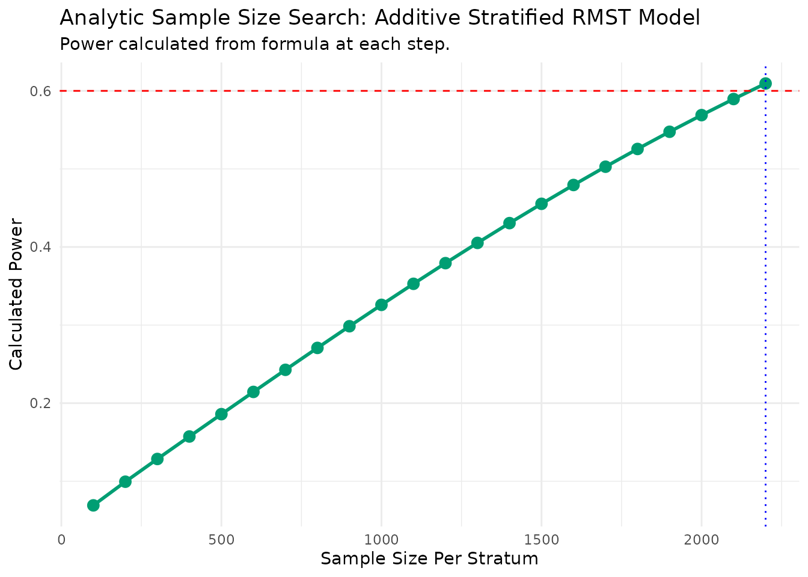
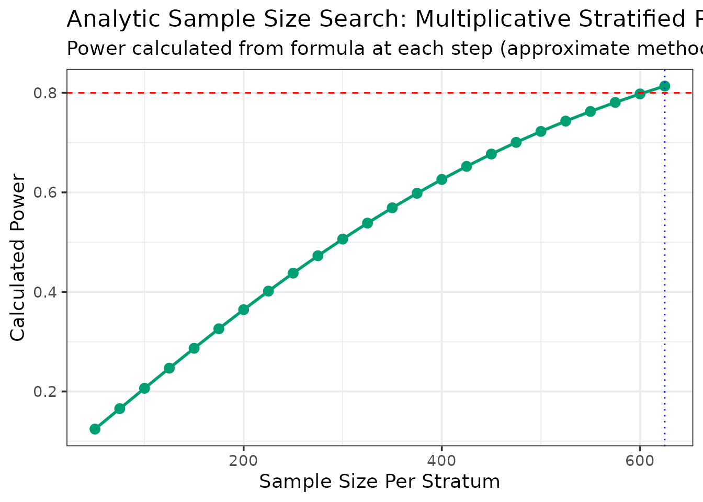
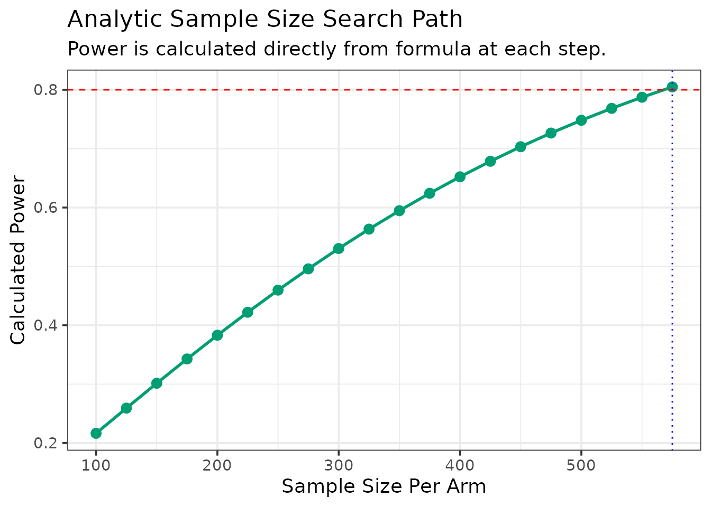

RMSTdesign: Sample Size and Power Calculations for RMST-based Clinical Trials
Arnab Aich
RMSTdesign.RmdIntroduction
The analysis of time-to-event data has traditionally been dominated by the Cox proportional hazards model, which focuses on the hazard ratio (HR) as the primary measure of treatment effect. However, the HR can be difficult to interpret, especially when the proportional hazards assumption is violated Zhang and Schaubel (2024). In such cases, the estimated HR becomes a weighted average that depends on the study’s specific censoring pattern, making it difficult to compare results across trials (Wang and Schaubel 2018). The Restricted Mean Survival Time (RMST) has emerged as a robust and clinically intuitive alternative, a conclusion supported by a growing body of literature that advocates for its use in the design and analysis of clinical trials Uno et al. (2014). The RMST is the average event-free time up to a pre-specified time point, , and is estimated as the area under the survival curve. This provides a direct measure of survival benefit in units of time (e.g., “days” or “months”), which is often more meaningful to clinicians and patients.
Instead of estimating RMST indirectly from a survival function, recent methodological advances have focused on modeling the RMST directly as a function of covariates. A foundational paper by (Tian, Zhao, and Wei 2014) established a class of such models using Inverse Probability of Censoring Weighting (IPCW), which provided the theoretical basis for direct RMST regression. Since then, the literature has rapidly expanded to adapt this direct modeling approach to the complex data structures seen in modern trials. Research has moved beyond a single timepoint to modeling the entire RMST curve as a function of restriction time Zhong and Schaubel (2022). Furthermore, to handle the common challenge of adjusting for high-dimensional categorical variables like clinical centers, computationally efficient stratified models were developed, including a multiplicative model by (Wang et al. 2019) and a complementary additive model by (Zhang and Schaubel 2024). For observational data, these methods have been extended to estimate causal effects (Ni, Lin, and Lu 2021), and for settings with competing risks, such as transplantation studies, (Wang and Schaubel 2018) developed a framework to handle dependent censoring using cause-specific weights.
To date, the computational implementation of these sophisticated methods has focused primarily on estimation. For instance, the original papers describe how estimation can be achieved through custom-coded procedures or by cleverly manipulating standard software for weighted least squares or Cox regression Zhang and Schaubel (2024). However, there is a significant gap between these theoretical estimation frameworks and the availability of validated, user-friendly tools for study design. Calculating the required sample size or statistical power for a trial based on these advanced RMST models is a complex task that, until now, would require bespoke simulation programming from trial statisticians.
This package, RMSTdesign, is designed to fill that critical gap. The
primary goal of RMSTdesign is to provide trialists with a comprehensive
and accessible suite of tools for power and sample size calculations
based on the very latest in direct RMST methodology. It operationalizes
the seminal work on direct RMST modeling into a set of validated
functions, allowing researchers to robustly design trials for a wide
variety of scenarios. RMSTdesign provides a comprehensive framework by
implementing several key methodologies from the statistical literature:
RMSTdesign provides a comprehensive framework by
implementing several key methodologies from the statistical
literature:
- Direct Linear Models: Based on the seminal work of (Tian, Zhao, and Wei 2014), these functions model the RMST directly using Inverse Probability of Censoring Weighting (IPCW).
- Stratified Models: For studies with nuisance categorical variables (e.g., clinical centers), we provide functions for both additive (Zhang and Schaubel 2024) and multiplicative ((Wang et al. 2019)) models, which efficiently handle stratification without estimating parameters for each level.
- Dependent Censoring Models: In settings with competing risks, such as transplantation studies where receiving an organ dependently censors death, we implement methods from (Wang et al. 2019).
- Flexible Non-Linear Models: For covariates with suspected non-linear effects, the package includes bootstrap-based functions using Generalized Additive Models (GAMs) on pseudo-observations.
-
Analytic vs. Bootstrap Methods: For many models,
the package offers both an
analyticalapproach for rapid calculations and aboot(bootstrap) approach for enhanced robustness at the cost of computation time.
This vignette will guide you through the theory and application of each of these function groups.
Linear IPCW Models
These models assume a direct linear relationship between covariates and the RMST. They are the foundational models for direct RMST regression when dealing with independent censoring.
Theory and Model
Based on the methods of (Tian, Zhao, and Wei 2014), these functions model the conditional RMST as , where is a link function. To account for right-censoring, the method uses Inverse Probability of Censoring Weighting (IPCW). The weight for an uncensored individual is the inverse of the probability of remaining uncensored up to their event time, where this probability is estimated from a Kaplan-Meier curve of the censoring distribution.
Analytical Methods
The analytical functions use a formula based on the asymptotic variance of the regression coefficients to calculate power or sample size, making them extremely fast.
Scenario: We use the veteran dataset to
estimate power for a trial comparing standard vs. test chemotherapy
(trt), adjusting for the Karnofsky performance score
(karno).
Power Calculation - linear.power.analytical
First, let’s inspect the prepared veteran dataset.
trt celltype time status karno diagtime age prior arm
1 1 squamous 72 1 60 7 69 0 0
2 1 squamous 411 1 70 5 64 10 0
3 1 squamous 228 1 60 3 38 0 0
4 1 squamous 126 1 60 9 63 10 0
5 1 squamous 118 1 70 11 65 10 0
6 1 squamous 10 1 20 5 49 0 0Now, we calculate the power for a range of sample sizes using a truncation time of 9 months year (270 days).
power_results_vet <- linear.power.analytical(
pilot_data = vet,
time_var = "time",
status_var = "status",
arm_var = "arm",
linear_terms = "karno",
sample_sizes = c(100, 150, 200, 250),
tau = 270
)
--- Estimating parameters from pilot data for analytic calculation... ---
--- Calculating asymptotic variance... ---
--- Calculating power for specified sample sizes... ---The results are returned as a data frame and a ggplot
object.
| N_per_Arm | Power |
|---|---|
| 100 | 0.1265610 |
| 150 | 0.1687428 |
| 200 | 0.2106066 |
| 250 | 0.2520947 |
Sample Size Calculation - linear.ss.analytical
We can also use the analytical method to find the required sample size to achieve a target power for a truncation time of an year(365 days) .
ss_results_vet <- linear.ss.analytical(
pilot_data = vet,
time_var = "time",
status_var = "status",
arm_var = "arm",
target_power = 0.40,
linear_terms = "karno",
tau = 365,
n_start = 1000, n_step = 250, max_n_per_arm = 5000
)
--- Estimating parameters from pilot data for analytic search... ---
--- Searching for Sample Size (Method: Analytic) ---
N = 1000/arm, Calculated Power = 0.128
N = 1250/arm, Calculated Power = 0.15
N = 1500/arm, Calculated Power = 0.171
N = 1750/arm, Calculated Power = 0.192
N = 2000/arm, Calculated Power = 0.214
N = 2250/arm, Calculated Power = 0.235
N = 2500/arm, Calculated Power = 0.256
N = 2750/arm, Calculated Power = 0.277
N = 3000/arm, Calculated Power = 0.297
N = 3250/arm, Calculated Power = 0.318
N = 3500/arm, Calculated Power = 0.338
N = 3750/arm, Calculated Power = 0.358
N = 4000/arm, Calculated Power = 0.378
N = 4250/arm, Calculated Power = 0.397
N = 4500/arm, Calculated Power = 0.417
--- Calculation Summary ---
Table: Required Sample Size
| Target_Power| Required_N_per_Arm|
|------------:|------------------:|
| 0.4| 4500|| Statistic | Value | |
|---|---|---|
| factor(arm)1 | Assumed RMST Difference (from pilot) | -3.966558 |

Bootstrap Methods
The bootstrap, or simulation-based, approach provides a robust,
distribution-free alternative. The .boot suffix in the
function names is shorthand for ‘bootstrap simulation’. This method
repeatedly resamples from the pilot data, fits the model on each sample,
and calculates power as the proportion of simulations where the
treatment effect is significant. While computationally intensive, it
makes fewer assumptions.
Power and Sample Size Calculation (.boot)
Here is how you would call the bootstrap functions for power for the
linear model. The following examples use the same veteran
dataset, but with a smaller number of simulations for demonstration
purposes. In practice, you would use a larger number of simulations
(e.g., 1000 or more) to ensure stability of the results.
First we calculate the power for a range of sample sizes. The linear.power.boot
function takes the pilot data and returns a data frame with the
estimated power for each sample size.
power_boot_vet <- linear.power.boot(
pilot_data = vet,
time_var = "time",
status_var = "status",
arm_var = "arm",
linear_terms = "karno",
sample_sizes = c(150, 200, 250),
tau = 365,
n_sim = 200
)
--- Calculating Power (Method: Linear RMST with IPCW) ---
Simulating for n = 150 per arm...
Simulating for n = 200 per arm...
Simulating for n = 250 per arm...
--- Simulation Summary ---
Table: Estimated Treatment Effect (RMST Difference)
|Statistic | Value|
|:--------------------|----------:|
|Mean RMST Difference | -4.087540|
|Mean Standard Error | 9.161558|
|95% CI Lower | -24.764020|
|95% CI Upper | 16.588940|
Here is how you would call the bootstrap function for sample size
calculation. We will use the function linear.ss.boot
to find the sample size needed to achieve a target power of 0.5,
truncating at 180 days (6 months).
ss_boot_vet <- linear.ss.boot(
pilot_data = vet,
time_var = "time",
status_var = "status",
arm_var = "arm",
target_power = 0.5,
linear_terms = "karno",
tau = 180,
n_sim = 500,
patience = 5
)
--- Searching for Sample Size (Method: Linear RMST with IPCW) ---
--- Searching for N for 50% Power ---
N = 50/arm, Calculated Power = 0.164
N = 75/arm, Calculated Power = 0.308
N = 100/arm, Calculated Power = 0.316
N = 125/arm, Calculated Power = 0.412
N = 150/arm, Calculated Power = 0.442
N = 175/arm, Calculated Power = 0.51
--- Simulation Summary ---
Table: Estimated Treatment Effect (RMST Difference)
|Statistic | Value|
|:--------------------|-----------:|
|Mean RMST Difference | -12.0138975|
|Mean Standard Error | 5.8496564|
|95% CI Lower | -23.4941297|
|95% CI Upper | -0.5336652|
Additive Stratified Models
In many trials, it is necessary to stratify by a categorical variable with many levels, such as clinical center or a discretized biomarker. Estimating a separate parameter for each stratum is inefficient. The additive stratified model elegantly handles this by conditioning out the stratum effect.
Theory and Model
The semiparametric additive model for RMST, , assumes that the effect of covariates is additive and constant across strata , while allowing each stratum to have its own baseline RMST, . The methods implemented here are based on Zhang & Schaubel (2024), who show that the common effect can be estimated efficiently by using a stratum-centering approach on the IPCW-weighted data, which avoids direct estimation of the numerous parameters.
Analytical Methods
Sample Size Calculation - additive.ss.analytical
Scenario: We use the colon dataset to
design a trial stratified by the extent of local disease
(extent), a factor with 4 levels. We want to find the
sample size per stratum to achieve 80% power. Let’s inspect the prepared
colon dataset.
time status rx extent arm strata
1 1521 1 Lev+5FU 3 1 3
3 3087 0 Lev+5FU 3 1 3
5 963 1 Obs 2 0 2
7 293 1 Lev+5FU 3 1 3
9 659 1 Obs 3 0 3
11 1767 1 Lev+5FU 3 1 3Now, we run the sample size search for 80% power, truncating at 5 years (1825 days).
ss_results_colon <- additive.ss.analytical(
pilot_data = colon_death,
time_var = "time", status_var = "status", arm_var = "arm", strata_var = "strata",
target_power = 0.60,
tau = 1825,
n_start = 100, n_step = 100, max_n_per_arm = 10000
)
--- Estimating parameters from pilot data for analytic search... ---
--- Searching for Sample Size (Method: Additive Analytic) ---
N = 100/stratum, Calculated Power = 0.069
N = 200/stratum, Calculated Power = 0.099
N = 300/stratum, Calculated Power = 0.128
N = 400/stratum, Calculated Power = 0.157
N = 500/stratum, Calculated Power = 0.186
N = 600/stratum, Calculated Power = 0.214
N = 700/stratum, Calculated Power = 0.243
N = 800/stratum, Calculated Power = 0.271
N = 900/stratum, Calculated Power = 0.299
N = 1000/stratum, Calculated Power = 0.326
N = 1100/stratum, Calculated Power = 0.353
N = 1200/stratum, Calculated Power = 0.379
N = 1300/stratum, Calculated Power = 0.405
N = 1400/stratum, Calculated Power = 0.431
N = 1500/stratum, Calculated Power = 0.455
N = 1600/stratum, Calculated Power = 0.479
N = 1700/stratum, Calculated Power = 0.503
N = 1800/stratum, Calculated Power = 0.526
N = 1900/stratum, Calculated Power = 0.548
N = 2000/stratum, Calculated Power = 0.569
N = 2100/stratum, Calculated Power = 0.59
N = 2200/stratum, Calculated Power = 0.609
--- Calculation Summary ---
Table: Required Sample Size
| Target_Power| Required_N_per_Stratum|
|------------:|----------------------:|
| 0.6| 2200|| Statistic | Value | |
|---|---|---|
| arm | Assumed RMST Difference (from pilot) | -36.77351 |

Power Calculation - additive.power.analytical
This function calculates the power for a given set of sample sizes in
a stratified additive model. We will use the colon dataset
again for this example.
# Calculate power for a range of sample sizes per stratum
power_results_colon <- additive.power.analytical(
pilot_data = colon_death,
time_var = "time",
status_var = "status",
arm_var = "arm",
strata_var = "strata",
sample_sizes = c(1000, 3000, 5000),
tau = 1825 # 5 years
)
--- Estimating parameters from pilot data... ---
--- Estimating additive effect via stratum-centering... ---
--- Calculating asymptotic variance... ---
--- Calculating power for specified sample sizes... ---| N_per_Stratum | Power |
|---|---|
| 1000 | 0.3258947 |
| 3000 | 0.7431725 |
| 5000 | 0.9212546 |

Multiplicative Stratified Models
As an alternative to the additive model, the multiplicative model may be preferred if the treatment is expected to have a relative effect on the RMST, such as increasing or decreasing survival time by a certain percentage.
Theory and Model
The multiplicative model is of the form , where the effect of covariates is a proportional change to the baseline stratum-specific RMST. This is particularly useful for facility profiling, where we might have thousands of centers. The methods implemented here, based on (Wang et al. 2019), use a computationally efficient two-stage procedure that avoids creating thousands of indicator variables, making analysis of very large datasets feasible.
Analytical Methods
Power Calculation - MS.power.analytical
This function calculates the power for various sample sizes using the analytical method for the multiplicative stratified model.
# Calculate power using the multiplicative stratified analytical method
power_ms_analytical <- MS.power.analytical(
pilot_data = colon_death,
time_var = "time", status_var = "status", arm_var = "arm", strata_var = "strata",
sample_sizes = c(300, 400, 500),
tau = 1825
)
--- Estimating parameters from pilot data (log-linear approximation)... ---
--- Calculating power for specified sample sizes... ---| N_per_Stratum | Power |
|---|---|
| 300 | 0.5061656 |
| 400 | 0.6259153 |
| 500 | 0.7225024 |
Sample Size Calculation - MS.ss.analytical
The following example demonstrates the sample size calculation using the same model.
# Calculate sample size
ms_ss_results_colon <- MS.ss.analytical(
pilot_data = colon_death, time_var = "time", status_var = "status", arm_var = "arm", strata_var = "strata",
target_power = 0.6,tau = 1825)
--- Estimating parameters from pilot data (log-linear approximation)... ---
--- Searching for Sample Size (Method: Analytic/Approximation) ---
N = 50/stratum, Calculated Power = 0.124
N = 75/stratum, Calculated Power = 0.165
N = 100/stratum, Calculated Power = 0.206
N = 125/stratum, Calculated Power = 0.247
N = 150/stratum, Calculated Power = 0.287
N = 175/stratum, Calculated Power = 0.326
N = 200/stratum, Calculated Power = 0.364
N = 225/stratum, Calculated Power = 0.402
N = 250/stratum, Calculated Power = 0.438
N = 275/stratum, Calculated Power = 0.473
N = 300/stratum, Calculated Power = 0.506
N = 325/stratum, Calculated Power = 0.538
N = 350/stratum, Calculated Power = 0.569
N = 375/stratum, Calculated Power = 0.598
N = 400/stratum, Calculated Power = 0.626
--- Calculation Summary ---
Table: Required Sample Size
| Target_Power| Required_N_per_Stratum|
|------------:|----------------------:|
| 0.6| 400|| Statistic | Value |
|---|---|
| Assumed log(RMST Ratio) (from pilot) | -0.0898114 |

Bootstrap Methods
The bootstrap approach provides a more robust, simulation-based analysis for the multiplicative model.
Power Calculation - MS.power.boot
The following code demonstrates how to call the
MS.power.boot function.
power_ms_boot <- MS.power.boot(
pilot_data = colon_death,
time_var = "time",
status_var = "status",
arm_var = "arm",
strata_var = "strata",
sample_sizes = c(100, 300, 500),
tau = 1825,
n_sim = 100,
parallel.cores = 10
)
--- Calculating Power (Method: Multiplicative Stratified RMST Model) ---
Simulating for n = 100/stratum...
Simulating for n = 300/stratum...
Simulating for n = 500/stratum...
--- Simulation Summary ---
Table: Estimated Treatment Effect (RMST Ratio)
| |Statistic | Value|
|:-----|:---------------|--------:|
| |Mean RMST Ratio | 1.006522|
|2.5% |95% CI Lower | 0.967946|
|97.5% |95% CI Upper | 1.057242|| Statistic | Value | |
|---|---|---|
| Mean RMST Ratio | 1.006522 | |
| 2.5% | 95% CI Lower | 0.967946 |
| 97.5% | 95% CI Upper | 1.057242 |

Sample Size Calculation - MS.ss.boot
Similarly, the sample size can be calculated using bootstrap simulation.
ss_ms_boot <- MS.ss.boot(
pilot_data = colon_death,
time_var = "time",
status_var = "status",
arm_var = "arm",
strata_var = "strata",
target_power = 0.5,
tau = 1825,
n_sim = 100,
n_start = 100,
n_step = 50,
patience = 4,
parallel.cores = 10
)
--- Searching for Sample Size (Method: Multiplicative Stratified RMST Model) ---
N = 100/stratum, Calculating Power...
Power = 0.35
N = 150/stratum, Calculating Power...
Power = 0.5
--- Simulation Summary ---
Table: Estimated Treatment Effect (RMST Ratio)
| |Statistic | Value|
|:-----|:---------------|---------:|
| |Mean RMST Ratio | 1.0056170|
|2.5% |95% CI Lower | 0.9233431|
|97.5% |95% CI Upper | 1.1281975|| Statistic | Value | |
|---|---|---|
| Mean RMST Ratio | 1.0056170 | |
| 2.5% | 95% CI Lower | 0.9233431 |
| 97.5% | 95% CI Upper | 1.1281975 |
Semiparametric GAM Models
When a covariate is expected to have a non-linear effect on the outcome, standard linear models may be misspecified. Generalized Additive Models (GAMs) provide a flexible solution.
Theory and Model
These functions use a bootstrap simulation approach combined with a
GAM. The time-to-event outcome is first converted into jackknife
pseudo-observations for the RMST. A GAM is then fitted to these
pseudo-observations, allowing for smooth, non-linear functions of
specified covariates using s() terms from the
mgcv package. This approach is powerful but computationally
intensive.
Bootstrap Methods
Power Calculation - GAM.power.boot
Scenario: We use the gbsg (German
Breast Cancer Study Group) dataset, suspecting that the progesterone
receptor count (pgr) has a non-linear effect on
recurrence-free survival. Here is a look at the prepared
gbsg data.
pid age meno size grade nodes pgr er hormon rfstime status arm
1 132 49 0 18 2 2 0 0 0 1838 0 1
2 1575 55 1 20 3 16 0 0 0 403 1 1
3 1140 56 1 40 3 3 0 0 0 1603 0 1
4 769 45 0 25 3 1 0 4 0 177 0 1
5 130 65 1 30 2 5 0 36 1 1855 0 1
6 1642 48 0 52 2 11 0 0 0 842 1 1The following code shows how to calculate power.
power_gam <- GAM.power.boot(
pilot_data = gbsg_prepared,
time_var = "rfstime",
status_var = "status",
arm_var = "arm",
smooth_terms = "pgr", # Model pgr with a smooth term
sample_sizes = c(50, 200, 400),
tau = 2825, # 5 years
n_sim = 500,
parallel.cores = 10
)
--- Calculating Power (Method: Additive GAM for RMST) ---
Simulating for n = 50 /arm ...
Simulating for n = 200 /arm ...
Simulating for n = 400 /arm ...
--- Simulation Summary ---
Table: Estimated Treatment Effect (RMST Difference)
|Statistic | Value|
|:--------------------|---------:|
|Mean RMST Difference | 859.57386|
|Mean Standard Error | 30.44227|
|95% CI Lower | 796.74021|
|95% CI Upper | 922.40752|
print(power_gam$results_plot)
Sample Size Calculation - GAM.ss.boot
Scenario: We want to find the sample size needed to
achieve 80% power for detecting an effect of pgr on
recurrence-free survival.
ss_gam <- GAM.ss.boot(
pilot_data = gbsg_prepared,
time_var = "rfstime",
status_var = "status",
arm_var = "arm",
target_power = 0.95,
tau = 182,
n_sim = 500,
patience = 5,
parallel.cores = 10
)
--- Searching for Sample Size (Method: Additive GAM for RMST) ---
N = 50/arm, Calculating Power... Power = 1
--- Simulation Summary ---
Table: Estimated Treatment Effect (RMST Difference)
|Statistic | Value|
|:--------------------|----------:|
|Mean RMST Difference | 90.7118904|
|Mean Standard Error | 0.2535895|
|95% CI Lower | 89.7766250|
|95% CI Upper | 91.6471557|
Dependent Censoring Models
In some studies, particularly observational or registry studies, censoring may not be independent of the event of interest. A classic example is in transplant medicine, where receiving an organ (a “good” event) removes a patient from being at risk of pre-transplant death. This is a form of competing risk, or dependent censoring.
Theory and Model
The methods from (Wang
et al. 2019) address this by extending the IPCW framework.
Instead of a single censoring model, cause-specific Cox
models are fitted for each source of censoring (e.g., one model
for administrative censoring, another for the competing event). The
final weight for a subject is a product of the weights derived from all
censoring causes, allowing for unbiased estimation of the RMST for the
primary event. We will use the mgus2 dataset for this
scenario.
id age sex dxyr hgb creat mspike ptime pstat time death event_primary
1 1 88 F 1981 13.1 1.3 0.5 30 0 30 1 0
2 2 78 F 1968 11.5 1.2 2.0 25 0 25 1 0
3 3 94 M 1980 10.5 1.5 2.6 46 0 46 1 0
4 4 68 M 1977 15.2 1.2 1.2 92 0 92 1 0
5 5 90 F 1973 10.7 0.8 1.0 8 0 8 1 0
6 6 90 M 1990 12.9 1.0 0.5 4 0 4 1 0
event_dependent arm
1 1 0
2 1 0
3 1 1
4 1 1
5 1 0
6 1 1Analytical Methods
Power Calculation - DC.power.analytical
This function calculates power for a study with dependent censoring (competing risks) for a given set of sample sizes.
dc_power_results <- DC.power.analytical(
pilot_data = mgus_prepared,
time_var = "time",
status_var = "event_primary",
arm_var = "arm",
dep_cens_status_var = "event_dependent",
sample_sizes = c(100, 250, 500),
linear_terms = "age",
tau = 120 # 10 years
)
--- Estimating parameters from pilot data... ---
--- Calculating asymptotic variance... ---
--- Calculating power for specified sample sizes... ---
Sample Size Calculation - DC.ss.analytical
Now, find the sample size needed for 80% power, truncating at 10 years (120 months).
ss_dc_mgus <- DC.ss.analytical(
pilot_data = mgus_prepared,
time_var = "time",
status_var = "event_primary",
arm_var = "arm",
dep_cens_status_var = "event_dependent",
target_power = 0.80,
linear_terms = "age",
tau = 120, # 10 years
n_start = 100, n_step = 50, max_n_per_arm = 5000
)
--- Estimating parameters from pilot data for analytic calculation... ---
--- Searching for Sample Size (Method: Analytic) ---
N = 100/arm, Calculated Power = 0.216
N = 150/arm, Calculated Power = 0.301
N = 200/arm, Calculated Power = 0.383
N = 250/arm, Calculated Power = 0.46
N = 300/arm, Calculated Power = 0.53
N = 350/arm, Calculated Power = 0.595
N = 400/arm, Calculated Power = 0.652
N = 450/arm, Calculated Power = 0.703
N = 500/arm, Calculated Power = 0.748
N = 550/arm, Calculated Power = 0.787
N = 600/arm, Calculated Power = 0.821
--- Calculation Summary ---
Table: Required Sample Size
| Target_Power| Required_N_per_Arm|
|------------:|------------------:|
| 0.8| 600|| Statistic | Value | |
|---|---|---|
| arm | Assumed RMST Difference (from pilot) | 1.556343 |

Conclusion
The RMSTdesign package provides a powerful and flexible
suite of tools for designing and analyzing clinical trials using the
Restricted Mean Survival Time.
Advantages and Disadvantages
- Advantages: The package implements a wide range of modern statistical methods, allowing users to handle complex scenarios like stratification, non-linear effects, and competing risks. The provision of both fast analytical methods and robust bootstrap methods gives users a choice between speed and distributional flexibility.
- Disadvantages: The primary limitation is the reliance on representative pilot data. The accuracy of any power or sample size calculation is contingent on the effect sizes and variance structures estimated from the pilot dataset. Furthermore, the bootstrap-based methods can be computationally intensive and may require access to parallel computing resources for timely results.